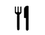

שוק שרונה מרקט
מתחם שרונה מרקט הוקם על מנת להיות הלב הפועם של הקולינריה השיראלית בשטח עם כ-90 חנויות, דוכנים ומסעדות בכל הקטגוריות. שרונה מרקט הינו שוק אורבני מודרני וחדשני, אשר משלב בין העולם הישן לעולם החדש.
בדף זה ניתן למצוא את כל המידע על השוק לפי הקטגוריות הבאות:

קולינריה
פסטה פיורי, דלי פליישמן, אבו שוקרי, שגב קונספט, קפטן קארי, ביירן מרקט, זה סושי, כרמליס בייגל, מיט בר בורגר,
בנדיקט, מקס ברנר, טייגר לילי, פושון
לפרטים נוספים:
- שעות וימי פעילות:א'-ה' 09:00-22:00 ו' וערבי חג 08:00 עד שעה לפני כניסת השבת/ החג. שבתות וחגים 09:00-23:00
- כתובת:רחוב קלמן מגן 3 תל-אביב
- טלפון: 03-6242424
- לרשותכם חניון שרונה - הכניסה לחניון מרחוב הארבעה 21.
- אתר שוק שרונה מרקט